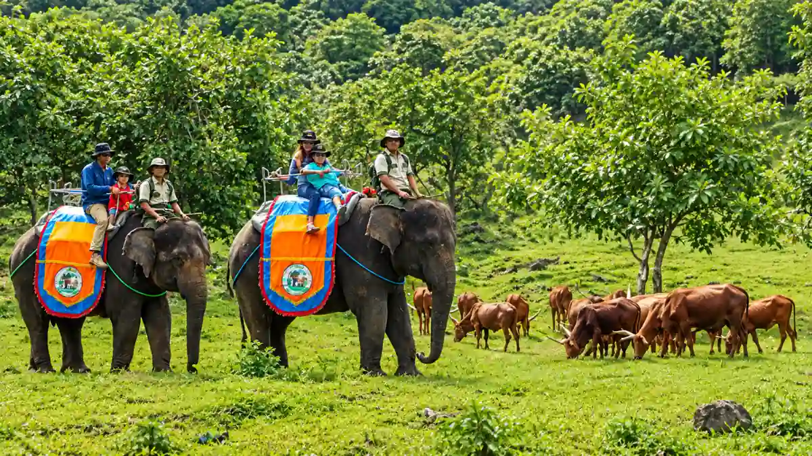
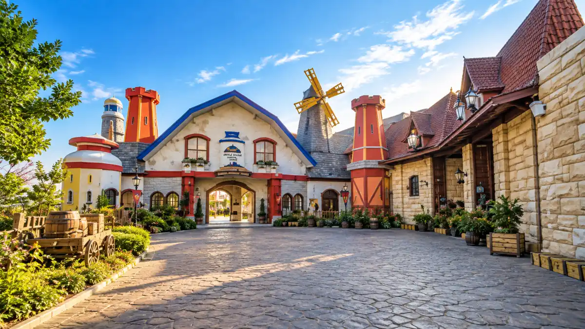

Panorama kawasan wisata Prigen, Pasuruan dengan pemandangan hijau pegunungan dan udara sejuk yang cocok untuk liburan keluarga maupun gathering perusahaan.Wisata Prigen Pasuruan terbaru didominasi destinasi keluarga dan edukatif seperti Cimory Dairyland dan Taman Safari, ditambah Kaliandra Sejati serta Finna Golf sebagai opsi venue yang lebih eksklusif.
- Apa Saja Wisata Prigen Pasuruan Terbaru yang Banyak Dicari?
- Mengapa Wisata Prigen Pasuruan Terbaru Bergeser ke Edukasi dan Keluarga?
- Seperti Apa Destinasi Wisata Prigen Pasuruan Terbaru Satu per Satu?
- Wisata Prigen Mana yang Cocok untuk Liburan Keluarga atau Gathering?
- Bagaimana Memastikan Informasi Wisata Prigen Pasuruan Terbaru Tetap Akurat?
- Bagaimana Mengelola Event Skala Besar di Wisata Prigen Pasuruan Terbaru?
- Apa Tips Berkunjung ke Wisata Prigen Pasuruan Terbaru agar Nyaman?
- Kesimpulan
Apa Saja Wisata Prigen Pasuruan Terbaru yang Banyak Dicari?
Wisata Prigen Pasuruan terbaru yang banyak dicari meliputi Cimory Dairyland Prigen, Taman Safari Indonesia II, Kaliandra Sejati, dan Finna Golf and Country Club.
Kata “terbaru” di sini merujuk pada destinasi yang sedang populer dan aktif memperbarui atraksi, bukan semata-mata tempat yang baru dibuka.
Kawasan Prigen, yang berdekatan dengan Tretes, menjadi rumah bagi banyak destinasi modern karena akses jalan dan tol yang baik dari Pandaan.
Wisatawan yang mencari wisata tretes terbaru biasanya menggabungkan destinasi alam Tretes dengan wahana keluarga di Prigen dalam satu perjalanan.
Mengapa Wisata Prigen Pasuruan Terbaru Bergeser ke Edukasi dan Keluarga?
Wisata Prigen Pasuruan terbaru bergeser ke edukasi dan keluarga karena wisatawan mencari pengalaman yang bisa dinikmati lintas usia dengan fasilitas modern dan akses mudah.
Data Dinas Pariwisata Kabupaten Pasuruan pada 2022 mencatat Taman Safari Indonesia II Prigen sebagai destinasi terbanyak dengan sekitar 600 ribu pengunjung, dan Cimory Prigen menyusul dengan hampir setengah juta pengunjung.
Dua destinasi tersebut sama-sama berkonsep wisata keluarga.
Pergeseran ini memberi manfaat nyata. Orang tua dapat membawa anak belajar tentang hewan atau produk susu, sementara pasangan dan rombongan kantor tetap menikmati pemandangan pegunungan.
Seperti Apa Destinasi Wisata Prigen Pasuruan Terbaru Satu per Satu?
Destinasi wisata Prigen Pasuruan terbaru memiliki karakter berbeda, yaitu Cimory untuk edukasi, Taman Safari untuk satwa, Kaliandra Sejati untuk suasana hutan, dan Finna Golf untuk nuansa eksklusif.

Suasana Cimory Dairyland Prigen dengan area terbuka hijau dan wahana edukasi yang cocok untuk liburan keluarga.Cimory Dairyland Prigen
Cimory Dairyland Prigen menarik karena konsep wisata edukatif modern yang mudah dijangkau dari arah Pandaan dan tol, sehingga cocok untuk keluarga dan rombongan.
Pengunjung dapat menikmati area terbuka, interaksi dengan hewan, dan fasilitas kuliner. Rincian wahana, tiket, dan jam buka dapat berubah, sehingga pengecekan di kanal resmi sangat dianjurkan.
Taman Safari Prigen
Taman Safari Prigen, yang dikenal sebagai Taman Safari Indonesia II, menawarkan wisata satwa dan wahana keluarga yang secara berkala menghadirkan atraksi baru.
Taman Safari menjadi alasan utama banyak wisatawan dari seluruh Jawa Timur datang ke Prigen.
Karena kunjungan biasanya memakan waktu lama, rombongan sebaiknya mengatur jadwal agar tidak kelelahan.
Kaliandra Sejati
Kaliandra Sejati cocok sebagai venue event karena memadukan vila, warung makan, pendopo, jalan yang baik, dan suasana hutan yang tertata di kawasan Prigen.
Suasana tenang membantu peserta fokus pada kegiatan. Ruang terbuka juga memudahkan penataan sesi kelompok bila izin penggunaan area sudah disepakati dengan pengelola.
Finna Golf and Country Club
Finna Golf and Country Club menawarkan padang rumput terawat dan nuansa eksklusif yang cocok untuk acara perusahaan dengan standar fasilitas lebih tinggi.
Pemandangan hijau yang luas menjadi nilai jual utama. Aturan penggunaan area dan jam operasional perlu dikonfirmasi langsung kepada pengelola.
Wisata Prigen Mana yang Cocok untuk Liburan Keluarga atau Gathering?
Untuk liburan keluarga, Cimory Dairyland dan Taman Safari paling praktis, sedangkan untuk gathering perusahaan, Kaliandra Sejati dan Finna Golf lebih fleksibel sebagai venue.
| Destinasi | Cocok Untuk | Catatan |
|---|---|---|
| Cimory Dairyland Prigen | Keluarga, rombongan edukasi | Akses mudah dari Pandaan |
| Taman Safari Indonesia II | Keluarga, wisata satwa | Siapkan waktu seharian |
| Kaliandra Sejati | Gathering, retreat kecil | Suasana hutan dan vila |
| Finna Golf and Country Club | Event eksklusif | Konfirmasi aturan area |
Bagaimana Memastikan Informasi Wisata Prigen Pasuruan Terbaru Tetap Akurat?
Informasi wisata Prigen Pasuruan terbaru dapat dipastikan akurat dengan mengecek kanal resmi pengelola, membandingkan ulasan beberapa bulan terakhir, dan menghubungi pengelola sebelum berangkat.
Tarif, jam operasional, dan atraksi dapat berubah mengikuti musim dan kebijakan pengelola. Hindari mengandalkan satu sumber lama.
Data kunjungan resmi dapat dibaca pada publikasi Pemkab Pasuruan, yang mencatat sekitar 2,1 juta kunjungan pada 2024 dan sekitar 38 destinasi di wilayah tersebut.
Bagaimana Mengelola Event Skala Besar di Wisata Prigen Pasuruan Terbaru?
Event skala besar di wisata Prigen Pasuruan terbaru dikelola dengan memetakan jumlah peserta, jadwal transportasi, tiket masuk, area kegiatan, konsumsi, dan rencana cadangan saat hujan.
Destinasi modern umumnya luas, tetapi acara puluhan hingga ratusan peserta memerlukan manajemen yang rapi, meliputi pengaturan keberangkatan bus, titik kumpul, pembagian kelompok, dan alur tiket.
Batu Camping dapat menjadi mitra konsultasi konsep, terutama untuk kegiatan bertema alam seperti capacity building di area outdoor.
Panitia dapat melihat paket camping Batu Camping sebagai referensi format, membaca profil Batu Camping, lalu mengirim kebutuhan acara lewat halaman booking.
Apa Tips Berkunjung ke Wisata Prigen Pasuruan Terbaru agar Nyaman?
Tips berkunjung ke wisata Prigen Pasuruan terbaru agar nyaman adalah datang saat hari kerja, berangkat pagi, membeli tiket lebih awal, dan menyiapkan pakaian hangat.
- Hindari puncak libur nasional bila ingin antrean pendek.
- Bawa jaket dan jas hujan karena cuaca pegunungan berubah cepat.
- Siapkan uang tunai dan alat pembayaran digital.
- Atur dua sampai tiga destinasi per hari agar perjalanan tidak melelahkan.
Wisata Prigen Pasuruan terbaru menawarkan perpaduan edukasi, satwa, dan venue bernuansa hutan yang cocok untuk keluarga maupun gathering.
Kesimpulan
Wisata Prigen di Kabupaten Pasuruan pada tahun 2026 terus berkembang pesat menjadi pusat destinasi edukasi dan wisata ramah keluarga yang modern.
Destinasi populer seperti Cimory Dairyland dan Taman Safari Indonesia II menawarkan pengalaman interaktif yang cocok untuk segala usia, sementara Kaliandra Sejati dan Finna Golf and Country Club menyediakan fasilitas premium untuk kebutuhan acara berskala besar (corporate gathering).
Dengan akses tol yang terintegrasi, udara sejuk pegunungan, serta fasilitas yang terus diperbarui, Prigen mengukuhkan diri sebagai pilihan destinasi wisata dan rekreasi yang fleksibel dan terkemuka di Jawa Timur.
FAQ (Pertanyaan yang Sering Diajukan)